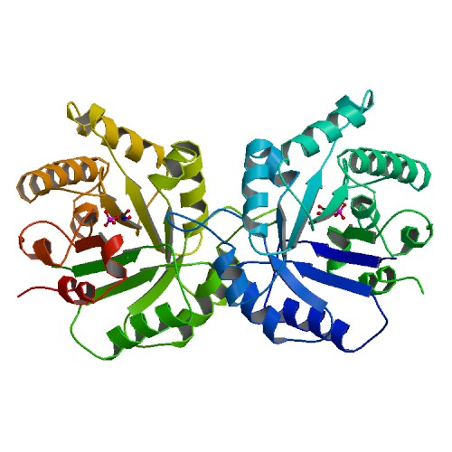

Search Results
| 7tim | Resolution: | ||
| Title | STRUCTURE OF THE TRIOSEPHOSPHATE ISOMERASE- PHOSPHOGLYCOLOHYDROXAMATE COMPLEX: AN ANALOGUE OF THE INTERMEDIATE ON THE REACTION PATHWAY | ||
| Classification | INTRAMOLECULAR OXIDOREDUCTASE | ||
| EC number | 5.3.1.1 | ||
| Chain A | Checkbox SCOP |
| 7tim | Resolution: | |
|  | Title | STRUCTURE OF THE TRIOSEPHOSPHATE ISOMERASE- PHOSPHOGLYCOLOHYDROXAMATE COMPLEX: AN ANALOGUE OF THE INTERMEDIATE ON THE REACTION PATHWAY |
| Classification | INTRAMOLECULAR OXIDOREDUCTASE | |
| EC number | 5.3.1.1 | |
| Chain A | SCOP |
| 7tim | Resolution: | |
| Title | STRUCTURE OF THE TRIOSEPHOSPHATE ISOMERASE- PHOSPHOGLYCOLOHYDROXAMATE COMPLEX: AN ANALOGUE OF THE INTERMEDIATE ON THE REACTION PATHWAY | |
| Classification | INTRAMOLECULAR OXIDOREDUCTASE | |
| EC number | 5.3.1.1 | |
| Chain A | SCOP |
| 7tim | Resolution: | |
| Title | STRUCTURE OF THE TRIOSEPHOSPHATE ISOMERASE- PHOSPHOGLYCOLOHYDROXAMATE COMPLEX: AN ANALOGUE OF THE INTERMEDIATE ON THE REACTION PATHWAY | |
| Classification | INTRAMOLECULAR OXIDOREDUCTASE | |
| EC number | 5.3.1.1 | |
| Chain A | SCOP |